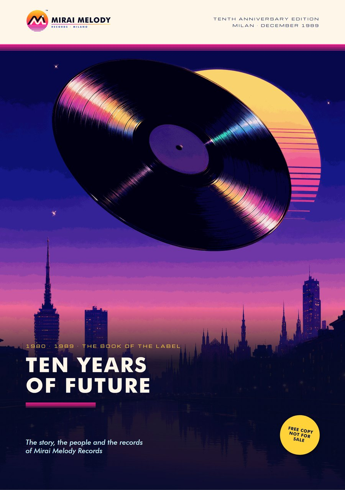

Mirai Melody Records · Milan · 1980–1989
Ten Years of Future
The label's anniversary booklet, December 1989: the shop on Corso Buenos Aires, the people behind the records, Mirai's Milan, the series and the artists. Twelve pages, free to read.
Off the record: Mirai Melody is an imagined label and this booklet is part of a work of fiction, made with the help of AI by a solo creator in Italy. An imagined 1980s, real new music.